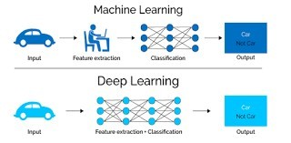

When Machine Learning Gets Really Smart
By now, you've seen how traditional machine learning models learn patterns from data. But what happens when the data is huge, messy, or complex, like images, videos, or human language? That's where deep learning shines. In this lesson, we'll explore how deep learning works, what makes it different from traditional ML, and how it powers modern technologies like Siri, facial recognition, and medical image analysis.
Deep learning is a subset of machine learning that uses neural networks with many layers to automatically learn from data. Unlike traditional ML, which often requires manual feature engineering, deep learning models can extract patterns directly from raw data.
| Traditional Machine Learning | Deep Learning |
|---|---|
| Requires manual feature selection | Learns features automatically |
| Works well with small to medium datasets | Needs large datasets |
| Ideal for structured data (tables, numbers) | Ideal for unstructured data (images, audio, text) |
| Usually faster to train | Takes longer and needs more computing power |
Watch: Intro to Deep Learning – Simplilearn
Think of a neural network as a simplified digital version of the human brain. It consists of neurons (also called nodes), which are organized into layers. These networks can learn to identify patterns, make predictions, and even recognize speech or objects in photos.
The more hidden layers a model has, the "deeper" the learning, hence the name deep learning.
These functions decide whether a neuron should "fire" and pass information along. They introduce non-linearity, allowing the model to learn more complex patterns.
Common activation functions:
Watch: Neural Networks Explained Simply – 3Blue1Brown
Deep learning models, especially Convolutional Neural Networks (CNNs), can identify objects, people, and more from images.
Examples:
NLP allows machines to understand, process, and generate human language.
Examples:
Watch: Machine Learning Applications – Simplilearn
Now that you've seen how deep learning powers advanced AI applications, you might wonder: "How do we implement these models in real-world systems?" That's exactly what we'll explore in our next lesson on deploying and scaling machine learning models.